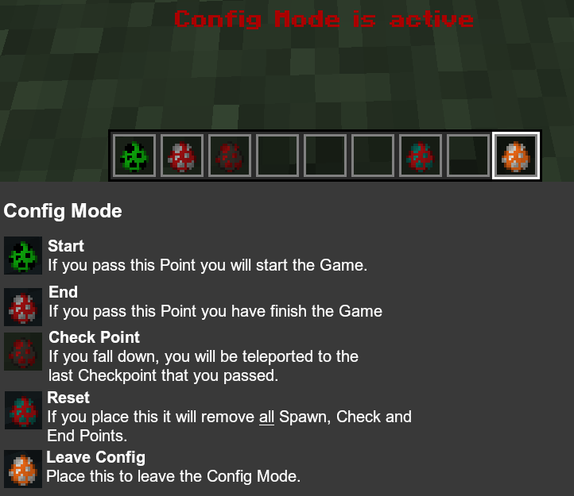

Jump and Run
1.13 +
Do you want to build a Jump and Run? Then this is the right Data Pack for you. With it you can create your own Jump and Run with checkpoints and a timer.
To start the game you have to pass the Jump and Run starting point. To exit the game, you can drop the Barrier in your inventory.
When you pass a checkpoint, you will be teleported back to that point, if you fall down.
When you pass the Jump and Run end point you have finished the game and the timer stops.
Setup

- Install the Data Pack and rejoin the world or restart the server.
- Build your Jump and Run. You can only use blocks which are listed in the Parkour Blocks spoiler bellow. The other blocks will teleport you back to the last checkpoint.
- Enable cheats or give yourself op if you are on a server and execute this command:
/tag @s add jar_config - In the picture you can see what the different items do if you place them.
Parkour Blocks
For the Jump and Run you can only use the blocks which are listed below. If the player stands on an other Block, he will be teleported back to his latest checkpoint. You also need to place these blocks below the Start and End Point.
The blocks are:
- Walls
- Fences
- Chorus Fruit
- Chorus Plant
- Ladder
- Vine
- Iron Bars
- Glass Pane (stained and clear)
- Slime Block
- Honey Block (1.15 +)
- Chain (1.16 +)
- Weeping Vines (1.16 +)
- Twisting Vines (1.16 +)
- Dripleaves (1.17 +)
- Slabs
- Double Slabs (If you place two slabs on each other, they look like an normal block, but they aren't)